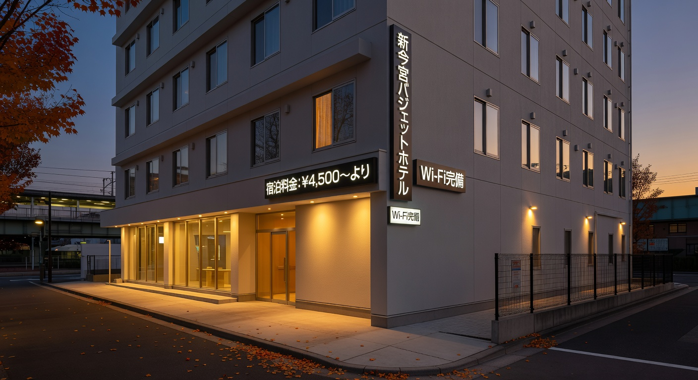
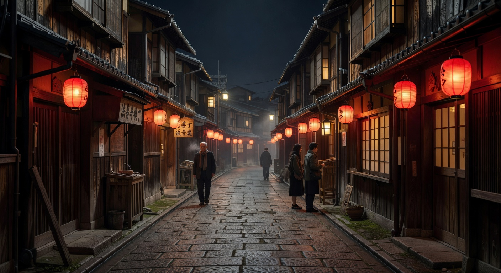
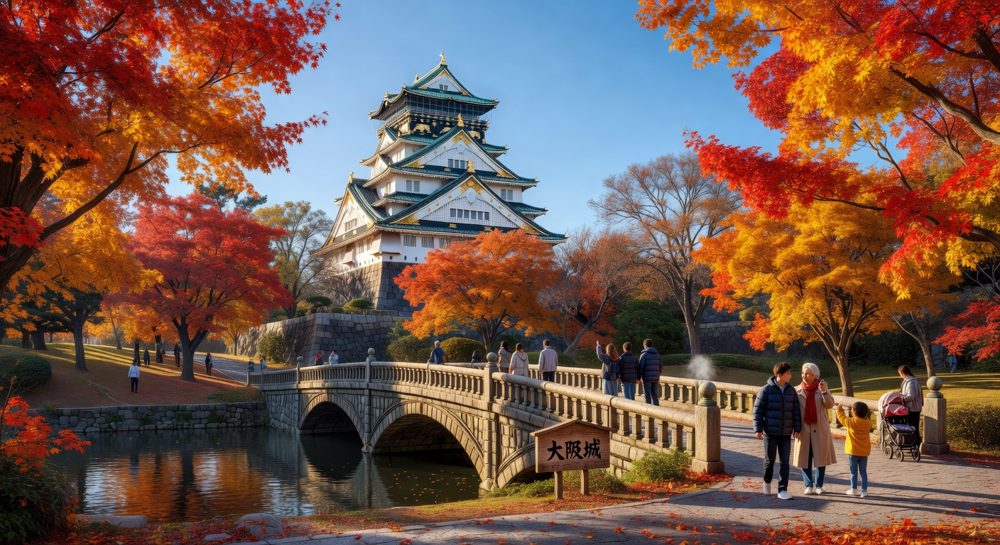
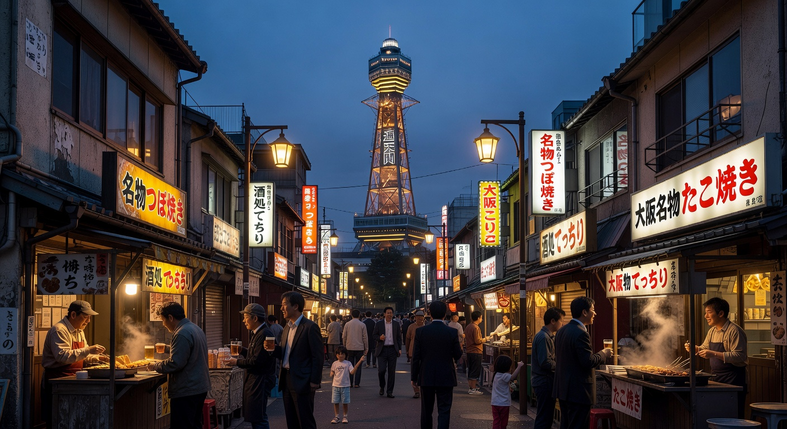

位於新今宮站步行僅1-3分鐘，JR・南海・地鐵全面接駁。前往道頓堀只需10-15分鐘，交通極為便利，是大阪經典的CP值住宿區域。
2026年最新推薦選擇：Hotel Shin Imamiya（新今宮酒店）、CHISUN STANDARD、R Hotel Namba South。許多房型擁有大浴場，可眺望通天閣夜景。

所有夜間景點皆安排在晚上，完美配合11月營業時間與氛圍
抵達日輕鬆安排，晚上直奔大阪最經典的霓虹與懷舊巷弄。



2026年11月最新整理，幫助你安心出發。